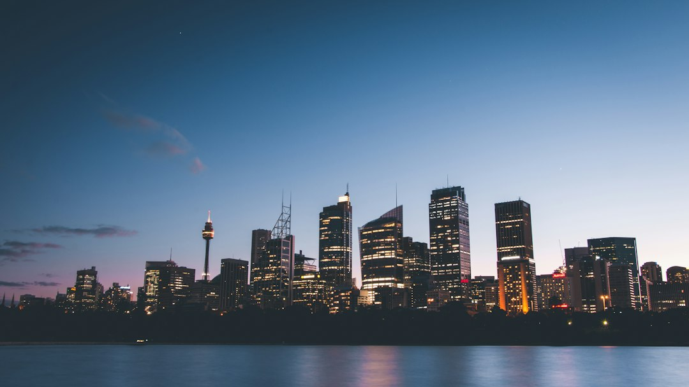

A Sydney business website brief should settle the platform, page scope, content readiness, ownership, hosting, redirects and care before design starts. The published Web Design Sydney Australia page says a standard business website commonly takes 4 to 12 weeks, depending on site size and how quickly content and approvals arrive. It also frames useful choices around custom builds, WordPress, Shopify, WooCommerce, redesigns, landing pages, SEO-ready foundations and ongoing maintenance.
For Sydney businesses comparing website design sydney options, the useful starting point is not colour or layout, but the enquiry path, platform fit and ownership model.
Website Design Sydney Explained
Web Design Sydney Australia frames a good Sydney site around trust, mobile loading and a simple enquiry path. That is a useful filter for any buyer because a site can look polished and still fail to explain what the business does, who it suits and what the visitor should do next.
The source page gives three practical outcomes to define before asking for a quote: more qualified enquiries, a cleaner quote path or a stronger platform. A redesign has another job as well, preserving useful pages that already rank while improving the visitor experience.
- Write down the main enquiry you want, such as a call, form, booking request or product purchase.
- Separate new local searchers from referral visitors and returning customers, because they need different proof.
- Ask how the proposed page order will support that decision path.
Choose The Platform For Operations
The source page names custom builds, WordPress, Shopify and WooCommerce as possible paths. The decision should follow the way the business works, not the trendiest tool. A small service business may value editable pages and fast publishing, while an online store needs product data, checkout trust and maintenance planning.
Ask who will update pages after launch, who owns the domain and hosting access, and whether logins are handed over. The published page is explicit that domains, content and finished sites should stay with the business, with handover discussed before build choices are locked.
For a second angle on the same Sydney buying problem, this companion guide to web design Sydney keeps the comparison focused on scope, platform and search foundations rather than surface styling.
Cost Signals To Clarify Before Quoting
The source page does not publish a fixed package price, and that is appropriate because website cost changes with scope, design complexity, content, e-commerce needs and custom features. It also says buyers commonly should get several written quotes and check what is included, such as content, images, hosting and maintenance.
Useful quote inputs include page count, product data, integrations, copy readiness, redirects and ongoing care. Those items affect effort more than a generic label like small business site or custom design. A concise brief can still be enough if it explains what the business sells, where it operates and what the site needs to do next.
- List must-have pages and nice-to-have pages separately.
- Confirm whether copywriting, images and testing are included.
- Ask whether redirects are planned for a redesign.
- Check what maintenance covers after launch.
Sydney Context Without Suburb Stuffing
The money page gives examples of different Sydney buyers, including a professional practice in North Sydney, a cafe in Surry Hills and an online retailer in Chatswood. The useful lesson is not that every suburb needs its own paragraph. It is that proof, page structure and calls to action change with the customer decision.
A practice site may need trust markers, service explanations and a low-friction enquiry route. A cafe may need location clarity, mobile speed and quick access to menus or bookings. A retailer needs product confidence, checkout clarity and a platform that can support catalogue changes. Local design choices should come from those scenarios, not from copying a suburb list into footer text.
Search Foundations And Honest Limits
The source page describes fast, mobile-first, clean, search-ready foundations, but it also rejects first-page guarantees. That is the right distinction. Technical structure helps a site be crawled, understood and used, while ongoing search growth still depends on content, authority, competition and time.
For website design sydney buyers, the practical questions are specific: will the pages have clear headings, useful internal links, clean mobile layouts, sensible metadata and a plan for existing URLs? If the project includes a redesign, ask how ranking pages are identified and protected before anything is replaced.
The World Wide Web Consortium publishes web standards, and the ACCC is a relevant Australian source for consumer guidance when comparing claims made by suppliers. Those authorities do not replace a project brief, but they give useful external reference points for quality, transparency and fair dealing.
- Define the enquiry. Write the action the site must produce and the type of customer it should attract.
- Map the content. List current pages, required new pages, missing copy, images and product information.
- Select the platform. Choose WordPress, Shopify, WooCommerce or custom development according to operations and ownership needs.
- Request written scope. Ask for inclusions covering content, images, hosting, maintenance, redirects and handover.
- Plan aftercare. Confirm updates, backups, security support and who is responsible once the site is live.
| Build path | Best fit from the source page | Questions to ask |
|---|---|---|
| WordPress website | A flexible site the owner or team can update | Who edits pages, and are admin logins handed over? |
| Shopify or WooCommerce store | An online store that needs fast loading and buyer trust | How are product data, checkout and maintenance handled? |
| Website redesign | An ageing or underperforming site with existing search value | Which ranking pages and redirects are protected? |
| Landing page | A campaign, launch or promotion | What single action should the visitor take? |
Common questions
How long does a standard Sydney business website take? The source page says a standard business website typically takes 4 to 12 weeks, including discovery, design, development, testing and content creation. Timing depends on site size and how quickly content and approvals are supplied.
Should a Sydney business choose WordPress or e-commerce software? Use the platform that fits the work. The source page positions WordPress for flexible editable sites, and Shopify or WooCommerce for online stores that need fast loading, trust and conversion.
Can a new website guarantee Google rankings? No. The source page states there are no first-page guarantees, because search growth also depends on content, authority, competition and time.
What should be checked before approving a redesign? Ask which existing pages already bring value, how redirects will be handled and whether ownership, hosting, editable content and maintenance are clear before build decisions are locked.
This guide covers Sydney website brief planning, platform choice, quote checks, ownership, search foundations and redesign questions.